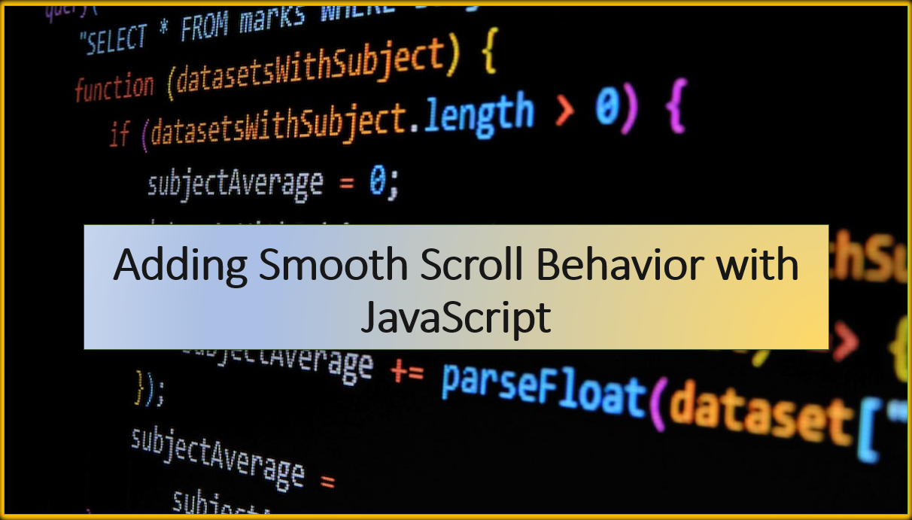

Introduction
Smooth scrolling is a technique that enhances the user experience by creating a fluid and visually appealing transition when navigating through a webpage.
With JavaScript, you can implement smooth scroll behavior that smoothly moves the user to a specific section of the page instead of an abrupt jump.
In this blog article, we'll guide you through the process of adding smooth scroll behavior to your website using HTML, CSS, and JavaScript.
Suggested Tutorials 📑:
1. HTML Structure
Set up the HTML structure for your smooth scrolling navigation. We'll create a navigation bar with three links that will take the user to different sections of the page. Each section will have a unique ID that will be used to create the links in the navigation bar.
<!DOCTYPE html>
<html>
<head>
<title>Smooth Scroll</title>
<link rel="stylesheet" href="styles.css">
</head>
<body>
<nav>
<ul>
<li><a href="#section1">Section 1</a></li>
<li><a href="#section2">Section 2</a></li>
<li><a href="#section3">Section 3</a></li>
</ul>
</nav>
<div id="section1" class="section">Section 1 content</div>
<div id="section2" class="section">Section 2 content</div>
<div id="section3" class="section">Section 3 content</div>
<script src="script.js"></script>
</body>
</html>
2. CSS Styling
Create a styles.css file to style your smooth scrolling navigation. We'll use the position: fixed property to fix the navigation bar to the top of the page. We'll also use the position: relative property to position the sections of the page relative to the navigation bar. This will ensure that the sections are not hidden behind the navigation bar when the user clicks on a link.
body {
margin: 0;
font-family: Arial, sans-serif;
}
nav {
background-color: #333;
color: white;
position: fixed;
top: 0;
width: 100%;
}
nav ul {
list-style-type: none;
display: flex;
justify-content: center;
padding: 10px 0;
}
nav li {
margin: 0 20px;
}
nav a {
text-decoration: none;
color: white;
font-weight: bold;
}
.section {
height: 100vh;
display: flex;
justify-content: center;
align-items: center;
font-size: 24px;
}
.section:nth-child(odd) {
background-color: #f9f9f9;
}
Suggested Tutorials 📑:
Implement the JavaScript logic for smooth scrolling in your script.js file. We'll use the scrollTo() method to scroll to a specific section of the page. The scrollTo() method takes an object as an argument with the following properties:
top: The distance from the top of the page to the top of the section.behavior: The scroll behavior. We'll set this to smooth to create a smooth scroll effect.
We'll use the offsetTop property to get the distance from the top of the page to the top of the section. We'll also use the preventDefault() method to prevent the default behavior of the link. This will prevent the browser from jumping to the section when the user clicks on a link.
const navLinks = document.querySelectorAll('nav a');
navLinks.forEach(link => {
link.addEventListener('click', smoothScroll);
});
function smoothScroll(event) {
event.preventDefault();
const targetId = event.target.getAttribute('href');
const targetElement = document.querySelector(targetId);
const offsetTop = targetElement.offsetTop;
window.scrollTo({
top: offsetTop,
behavior: 'smooth'
});
}
Suggested Tutorials 📑:
Conclusion
Congratulations! 🥳 You've successfully added smooth scroll behavior to your website using HTML, CSS, and JavaScript. With this enhancement, users can navigate through different sections of your webpage seamlessly and enjoy a more visually pleasing experience. You can customize the styling, animation duration, and other aspects of the smooth scroll effect to match your website's design and branding.
We hope you found this article helpful.
Happy coding! 😃